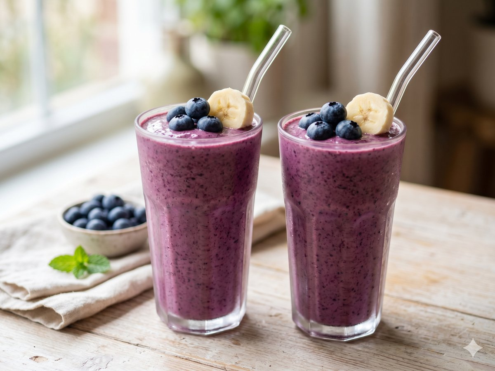

Blueberry Banana Smoothie
A bright, creamy three-minute blend to start the day.
3 min · Serves 2 · Mise Kitchen

Ingredients
- 1 ripe banana
- 1 cup frozen blueberries
- 1 cup milk
- 1/2 cup yogurt
- 1 tablespoon honey
- 1/2 teaspoon vanilla extract
Directions
- Add the banana, blueberries, milk, yogurt, honey, and vanilla to a blender.
- Blend until smooth, about 45 seconds.
- Pour into two glasses and serve cold.
An original recipe from Mise Kitchen. Free to save and cook.